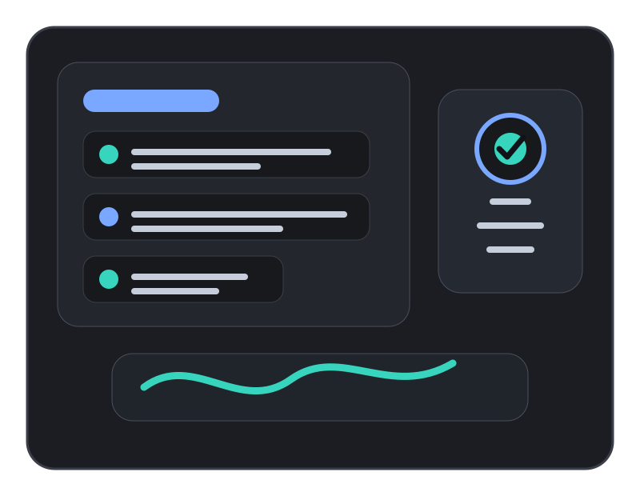
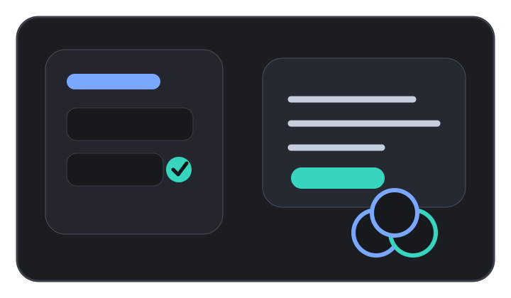
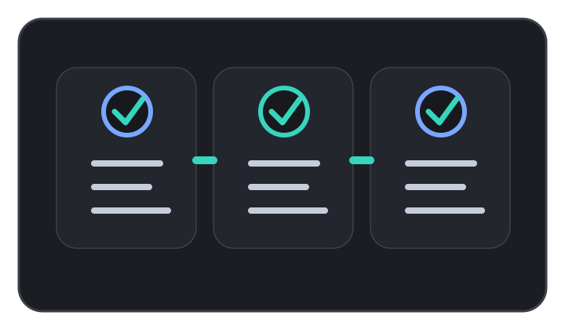
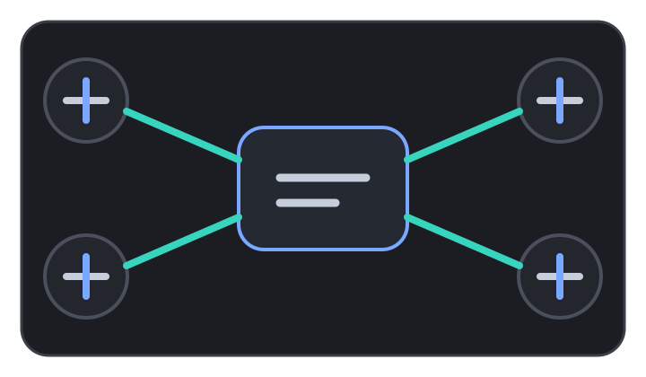

In-product surveys
Launch targeted questions inside your web or mobile product so users can respond while the experience is still fresh.
Enterprise survey platform
Brigz makes it fast and effortless for product teams to learn from customers in real time, understand what is working, and decide what to build next with confidence.

A live customer feedback workspace showing survey responses, sentiment, and insight progress in one view.
Study health
82% completionOpen themes
12Recent responses
248Sentiment by segment
Unified platform
Brigz replaces slow feedback cycles with always-on customer learning. Teams can ask targeted questions inside the product, collect responses while users are still in context, and quickly turn that feedback into useful product decisions.
Products & Services

Brigz combines in-product questions, feedback collection, AI summaries, and reporting so teams can move from customer signal to product action.
Launch targeted questions inside your web or mobile product so users can respond while the experience is still fresh.
Bring responses, quotes, themes, and product signals into one place so teams can find evidence without searching through scattered tools.
Use AI support to draft better questions, identify themes, summarize open-ended responses, and prepare clearer insight reports.
Measure onboarding, activation, feature adoption, pricing reactions, and satisfaction across the moments that matter most.
Turn customer feedback into concise reports that product, design, engineering, marketing, and leadership can act on.
Get help shaping survey goals, choosing the right workflow, and setting up studies that produce useful customer evidence.
What Brigz is used for
Ask users what they think immediately after they try a feature, complete a task, or run into friction. Product teams get answers when the customer still remembers the experience clearly.
Test whether customers understand, value, and want a new idea before committing engineering time. Brigz helps teams spot weak concepts early and improve stronger ones faster.
Find where people get confused, delayed, or disappointed across onboarding, checkout, dashboards, setup flows, and other key product journeys.
Monitor how customers feel about the product over time, then connect changes in sentiment to launches, bugs, pricing updates, or support experiences.
Use direct customer evidence to decide which problems matter most. Brigz helps product managers compare requests, pain points, and opportunities before setting priorities.
Give product, design, and growth teams a simple way to run lightweight research without waiting weeks for reports or stitching together feedback from scattered tools.
Design agent
Draft logic, branching, and neutral questions from a research objective.
Deploy
Send studies by email, link, panel, website, web app, iOS, or Android.
Field agent
Use conversational flows, attributes, and real-time probes to uncover meaning.
Synthesize
Surface themes, evidence, and narratives that stay editable before sharing.
Workflow

Each workflow guides teams through planning the question, reaching the right customers, and turning the responses into evidence.
Start with an objective and shape the question flow, logic, and guardrails.
Launch across external audiences, websites, web apps, and mobile apps.
Turn structured and open-ended results into stakeholder-ready findings.
Use cases
Teams
Research playbooks
Integrations

Brigz connects customer feedback with the tools teams already use for analytics, planning, collaboration, and research storage.
Connect to trusted research panels when your team needs fresh perspectives outside your existing customer base. Brigz helps you reach targeted audiences, collect responses quickly, and compare panel feedback with feedback from real product users.
Push completed findings, themes, quotes, and evidence into your research library so product managers, designers, marketers, and leadership can reuse customer insight instead of repeating the same questions.
Share important customer signals directly into team spaces where decisions already happen. Send summaries, urgent feedback, and study updates to channels, documents, tickets, or planning tools so insight does not stay buried.
Combine what customers say with what they actually do. Brigz can connect feedback to events, segments, funnels, and product usage patterns so teams understand the reason behind changes in conversion, activation, retention, and satisfaction.
Enterprise ready